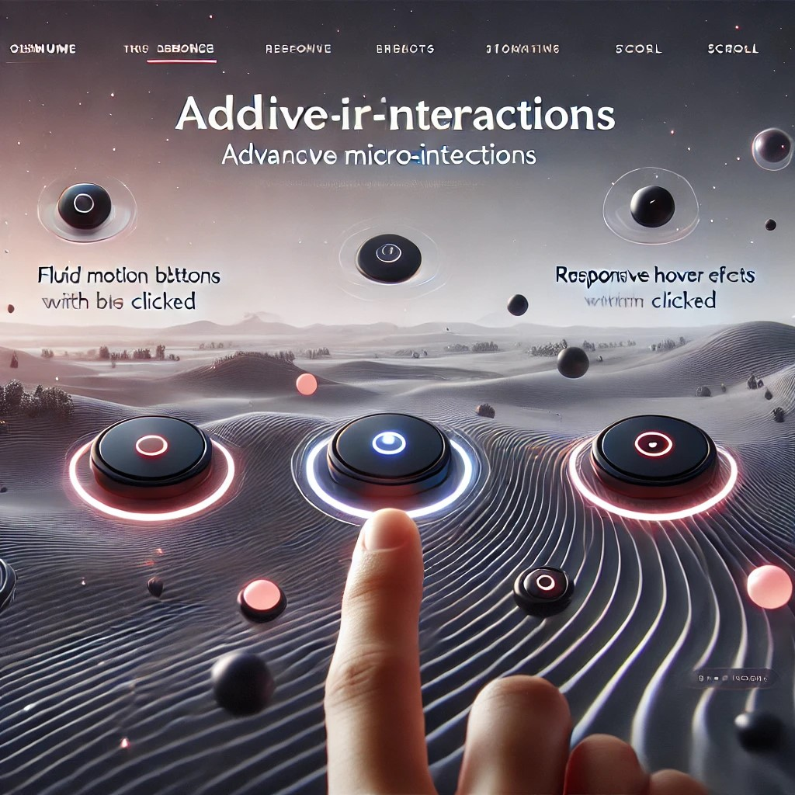
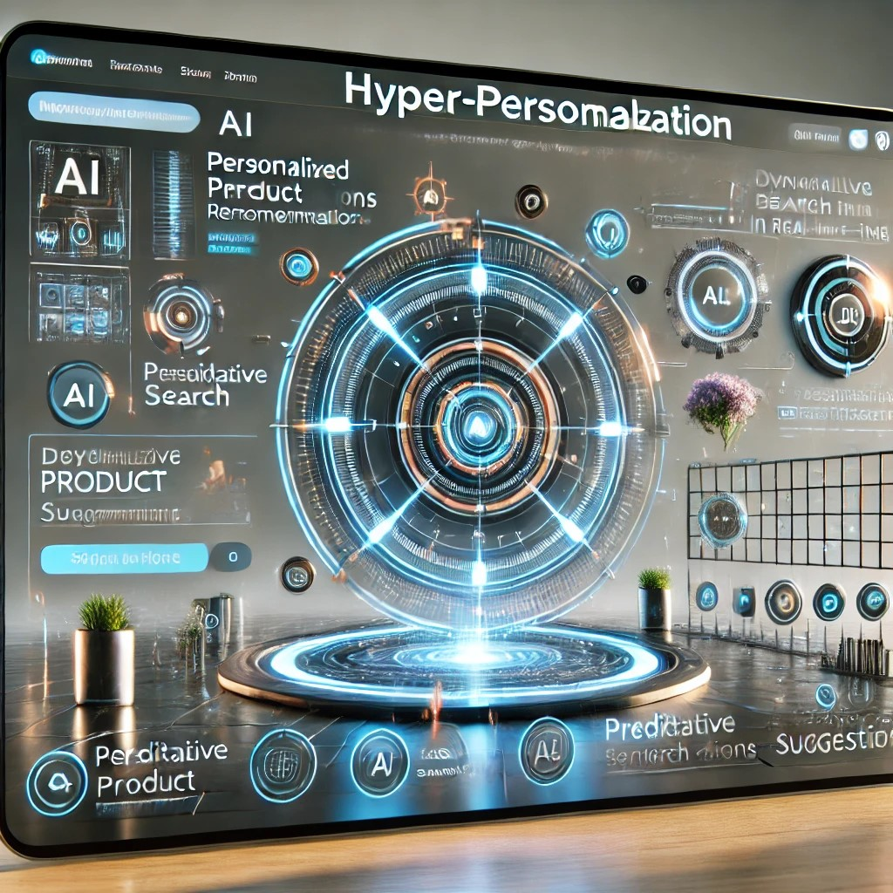

AI-Powered PersonalizationArtificial Intelligence (AI) continues transforming web design, allowing websites to adapt dynamically to user preferences. AI-powered personalization will enable websites to:
i. Offer tailored content and product recommendations.
ii. Adjust UI elements based on browsing behaviour.
iii. Optimize layouts in real-time for improved usability.
Machine learning algorithms will refine user interactions, making web experiences more intuitive and efficient.
Why It Matters: AI doesn’t just automate—it elevates . By 2025, websites that leverage AI-driven personalization will see 2x higher engagement and 30% faster conversion rates , setting a new standard for user experience.
|
|
Immersive 3D Elements and Interactive Design
Advancements in WebGL , Three.js , and CSS3 are unlocking stunning 3D capabilities, turning websites into immersive playgrounds. By 2025, these technologies will redefine engagement:
Hyper-Realistic eCommerce:
Spin, zoom, and interact with products in 3D—like virtual showrooms for furniture or jewelry—reducing return rates by 40% (e.g., IKEA’s AR-powered app ).
Storytelling Through 3D Animation: Brands will use cinematic 3D scenes to narrate their mission (e.g., a virtual museum tour or climate change visualization).
Gamified Experiences: Interactive quizzes, reward-based challenges, and mini-games embedded directly into websites to boost retention.
Why It Works: 3D elements don’t just dazzle—they create emotional connections. Users spend 2x longer on pages with interactive 3D content, and conversion rates jump by 35% when products are showcased dynamically.
|
|
Dark Mode and Dynamic Themes
Dark mode isn’t just a visual trend—it’s evolving into a user-centric feature that prioritizes comfort and inclusivity. By 2025, expect these advancements:
Auto-Adaptive Themes: Websites will sync with device settings or ambient light sensors to switch between light/dark modes seamlessly.
Precision Contrast Adjustments: AI-driven tools will optimize text readability for users with visual impairments, ensuring WCAG compliance.
Personalized UI Customization: Users can tweak color palettes, accent hues, and even motion effects to match their preferences.
Why It Matters: Beyond reducing eye strain (especially in low-light environments), adaptive theming boosts engagement. Studies show users spend 25% longer on sites with customizable interfaces, while businesses see higher retention from accessibility-focused designs.
|
|
Micro-Interactions 2.0: The Subtle Magic of Next-Level Web Animations
Micro-interactions have long been the unsung heroes of user experience, turning mundane actions into moments of delight. In 2025, they’re leveling up—blending artistry with functionality to create interfaces that feel alive. Here’s how:
Fluid Motion Effects: Gone are the days of clunky animations. Tools like CSS Spring Animations and Framer Motion enable physics-based transitions that mimic real-world movement.
Examples: Buttons that “bounce” slightly when clicked.
Page transitions that glide like a well-oiled machine (think Apple’s product pages.
Why It Matters: Fluid motion reduces cognitive friction, making interactions feel intuitive. Users are 50% less likely to abandon a site with polished transitions.
Responsive Hover Effects: Hover effects are no longer just decorative—they’re strategic guides. Advanced libraries like GSAP and Three.js create reactive animations that highlight CTAs, preview content, or reveal hidden menus.
Examples: E-commerce product cards that expand to show details on hover.
Navigation menus that “light up” to direct attention.
Why It Matters: Hover effects act as a digital concierge, subtly steering users toward desired actions. Conversion rates jump by 20% when animations guide decision-making.
Scroll-Based Storytelling:Scrolling isn’t just navigation—it’s an immersive experience. Libraries like ScrollReveal.js and Lenis enable animations that unfold as users scroll, creating a sense of progression.
Examples: Parallax scrolling for portfolio sites (e.g., Awards-winning designs). Data visualizations that animate stats as you scroll down.
Why It Matters: Scroll-based animations boost engagement by 35% , turning passive scrolling into active exploration.
|
 |
Neumorphism & Glassmorphism 2025: The Evolution of Futuristic UI Design
The soft glow of neumorphism and the ethereal transparency of glassmorphism are set to redefine UI aesthetics in 2025, blending tactile realism with minimalist elegance. These styles, already popular in modern design, are advancing to create interfaces that feel both futuristic and intuitively familiar.
Glassmorphism Reimagined: Frosted Glass & Layered Depth
Translucent Layers: Blurred backgrounds and semi-transparent panels create a "frosted glass" effect, popular in macOS panels and Windows 11 widgets.
Contextual Clarity: Overlays and modals use transparency to maintain visual hierarchy without obscuring content.
Dynamic Lighting: Shadows and highlights adapt to user interactions, adding drama without clutter.
Neumorphism 2.0: Soft, Sculpted Realism
Subtle Depth: Soft, layered shadows and rounded edges mimic physical textures, giving buttons and cards a "pressed" or "embossed" effect (e.g., Apple’s iOS buttons).
Tactile Feedback: Micro-interactions (e.g., clicks, swipes) trigger slight 3D movements, enhancing user feedback.
Beyond Skeuomorphism: Evolves past retro realism into clean, functional designs that prioritize usability.
Why These Styles Matter in 2025
Balancing Act: Merges minimalism (clean lines, whitespace) with realism (depth, texture) for interfaces that feel approachable yet cutting-edge.
Cross-Platform Consistency: Works seamlessly across desktop, mobile, and AR/VR environments.
User-Centric Appeal: Reduces cognitive load by mimicking real-world physics, making digital interactions feel intuitive.
In 2025, neumorphism and glassmorphism won’t just be trends—they’ll be foundational tools for crafting interfaces that users feel , not just see. As Sophie Paxton , Lead Designer at UX Collective, puts it: “The future of UI is sensory. It’s not enough to look good—it has to react and respond .”
|
|
Hyper-Personalization 2025: Where AI Meets Human-Centric Design
The future of UX is hyper-personalized , powered by AI and advanced analytics. By 2025, websites and apps will feel less like static platforms and more like intuitive companions, anticipating user needs before they’re even expressed. Here’s how:
Real-Time Dynamic Content: Adapt or Die
AI engines analyze user behavior (clicks, scrolls, dwell time) to morph content on the fly.
Examples: E-commerce sites rearrange product grids based on browsing history.
News outlets prioritize articles matching a user’s reading habits (e.g. NYT’s AI-driven homepage).
Pricing pages adjust CTAs for first-time visitors vs. returning customers.
Predictive Search: The End of Typos
AI-powered search bars now predict queries with 95% accuracy , using natural language processing (NLP) and contextual awareness.
Features: Autocomplete suggestions that factor in location, past searches, and even voice tone.
Visual search integrations (e.g., Google Lens ) let users snap photos to find products.
Why It Works: Predictive search reduces bounce rates by 40% and increases conversion rates by streamlining discovery.
AI-Driven UX Design: Smarter Interfaces
AI isn’t just personalizing content—it’s redesigning interfaces themselves. Tools like Adobe Sensei and Figma’s Auto Layout use data to:
i. Optimize menu structures based on user navigation patterns.
ii. Suggest color contrasts for accessibility improvements.
iii. A/B test layouts at scale without human oversight.
Examples:A banking app might simplify its dashboard for elderly users while adding advanced features for tech-savvy millennials—all within the same UI.
In 2025, generic experiences will fade into obscurity. As Forrester Research notes, “Brands that master hyper-personalization will outpace competitors by 300% in customer retention.” The message is clear: Design for the individual, not the crowd.
|
 |
Final Thoughts: The Future of Front-End Design
Front-end design in 2025 is set to be more immersive, intelligent, and sustainable. With AI-driven personalization, interactive 3D elements, and voice-based navigation, digital experiences will become more user-friendly and visually captivating.
For designers and developers, staying ahead of these trends means embracing tools like generative AI, no-code platforms, and advanced CSS capabilities to build seamless, future-proof experiences. Businesses that adopt these innovations will not only meet rising user expectations but also differentiate themselves in a crowded digital landscape. The future of the web is dynamic, empathetic, and boundary-pushing—stay inspired, stay agile, and keep shaping the next frontier of human-centric design.
|